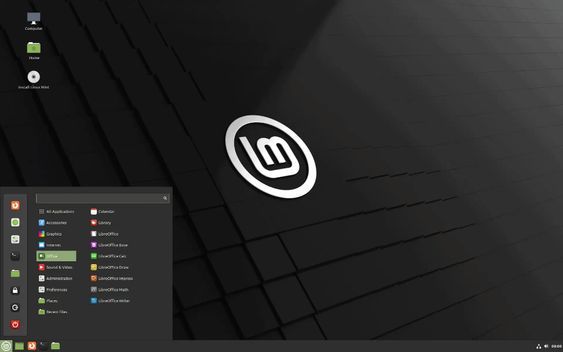
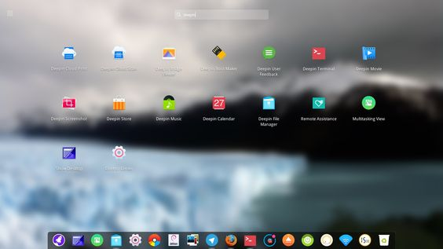
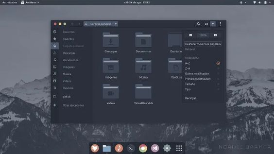
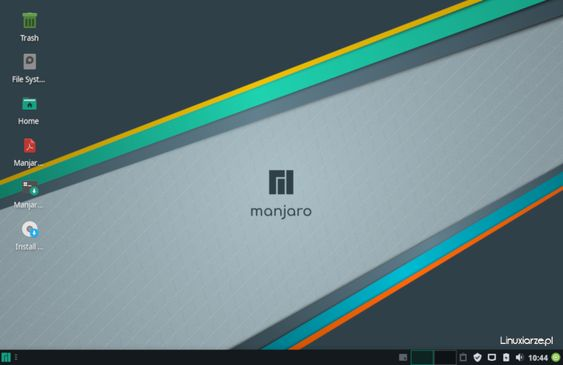
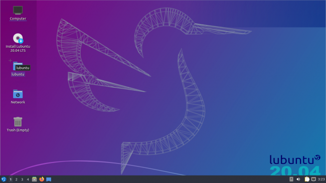
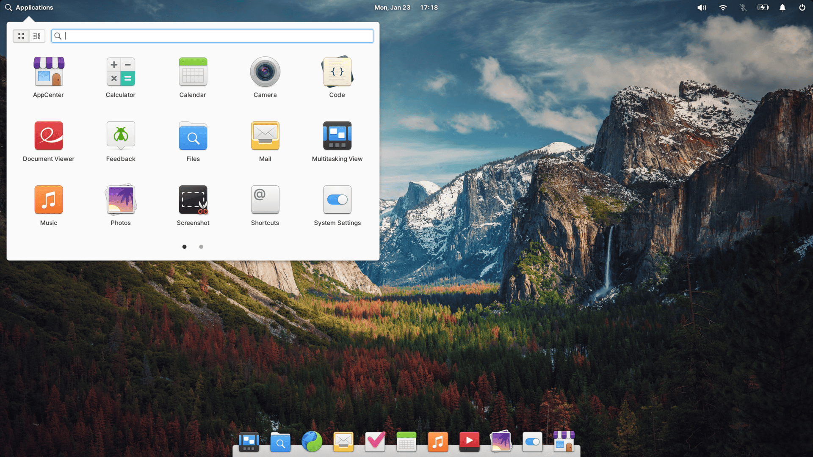
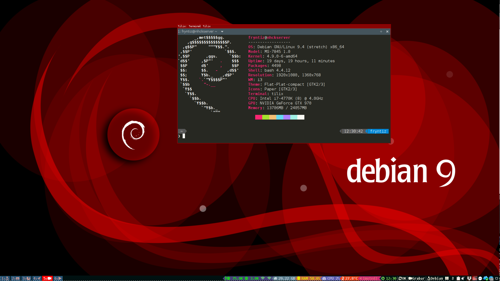
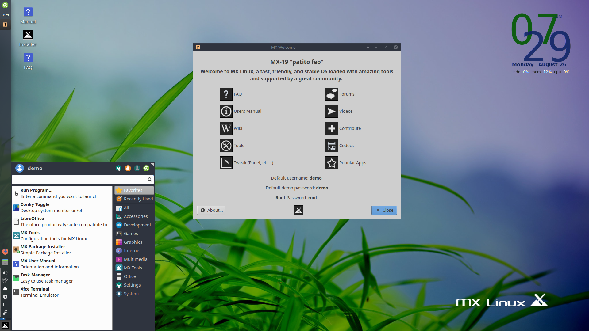
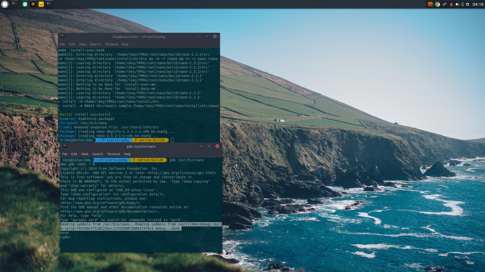
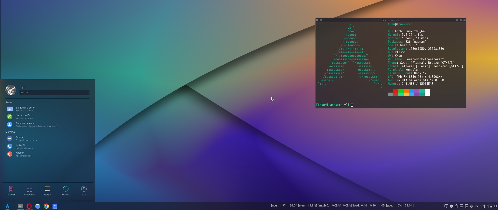

Добро пожаловать на наш сайт, посвящённый Linux — операционной системе, которая изменила мир технологий! В 2024 году Linux остаётся одной из самых надёжных, безопасных и гибких систем, подходящих как для профессионалов, так и для новичков. Linux — это свобода выбора, безграничные возможности настройки и сообщество, всегда готовое помочь.
Выбирая Linux, вы получаете:
- Безопасность и стабильность: Вы можете быть уверены, что ваши данные будут защищены благодаря открытой природе системы, где уязвимости быстро выявляются и устраняются.
- Производительность: Linux отлично подходит как для мощных серверов, так и для слабых устройств, обеспечивая высокую скорость работы даже на старом “железе”.
- Свобода и контроль: Забудьте о навязанных обновлениях и ограничениях. В Linux вы полностью контролируете свою систему.
2024 год — лучшее время для того, чтобы попробовать Linux, ведь доступно множество дистрибутивов, удобных для начинающих, а также активная поддержка со стороны сообщества. Присоединяйтесь к миллионам пользователей по всему миру и откройте для себя новые горизонты с Linux!
Linux Mint
Простой и удобный дистрибутив, который идеально подходит для тех, кто только начинает знакомство с Linux. Основан на Ubuntu и поставляется с предустановленными драйверами, кодеками и программами, что облегчает настройку. Имеет несколько версий рабочего окружения (Cinnamon, MATE, Xfce), что позволяет пользователю выбрать наиболее удобный интерфейс.
Deepin
Deepin — это дистрибутив Linux, основанный на Deepin Desktop Environment (DDE), который доступен для различных дистрибутивов. Он включает в себя сочетание программ с открытым исходным кодом и проприетарных программ, таких как Google Chrome, Spotify и Steam. Deepin Technology базируется в Китае и получает доход за счет продажи технической поддержки и других услуг. Deepin DE поддерживается в Fedora 30, UbuntuDDE и Manjaro Deepin. Deepin также интегрировала искусственный интеллект в свои приложения и объявила о поддержке процессорных архитектур, отличных от x86, включая ARM64 и RISC-V. По состоянию на декабрь 2022 года, Deepin насчитывает более 3 миллионов пользователей и поддерживает 33 языка.
Ubuntu
Ubuntu — это дистрибутив Linux, основанный на Debian GNU/Linux. Он был запущен в 2004 году и активно развивается компанией Canonical. Ubuntu использует Advanced Packaging Tool для управления пакетами и основан на среде рабочего стола GNOME. Основные особенности Ubuntu включают поддержку более 50 языков, работу на различных платформах (AMD64, PowerPC, ARM, UltraSPARC) и регулярные обновления дважды в год. Ubuntu используется в школах, государственных учреждениях и на серверах проектов, таких как Википедия и OpenStreetMap. По состоянию на 2024 год, Ubuntu насчитывает более 20 миллионов пользователей по всему миру и поддерживается свободным сообществом.
Manjaro
Manjaro — это дистрибутив Linux, основанный на Arch Linux. Он был запущен в 2011 году и предлагает пользователям легкий и гибкий интерфейс. Manjaro использует Pacman для управления пакетами и поддерживает различные среды рабочего стола, такие как KDE, GNOME и XFCE. Основные особенности Manjaro включают частые обновления, поддержку множества программ и приложений, а также активное сообщество пользователей. Manjaro также известен своей простотой установки и настройки, что делает его популярным среди новичков и опытных пользователей. По состоянию на 2024 год, Manjaro насчитывает значительное количество пользователей и продолжает развиваться, предлагая новые версии и обновления.
Lubuntu
Lubuntu — это легковесный дистрибутив Linux на базе Ubuntu, предназначенный для старых и маломощных устройств. Он использует среду рабочего стола LXQt и подходит для нетбуков и портативных устройств. Lubuntu известен своей экономией ресурсов и стабильными версиями с долгосрочной поддержкой.
Elementary
Elementary OS — это дистрибутив Linux, ориентированный на эстетику и удобство использования. Он основан на Ubuntu LTS и использует собственную среду рабочего стола Pantheon, которая разработана с целью быть интуитивно понятной и не потреблять слишком много ресурсов. Основные особенности включают элегантный интерфейс, поддержку популярных приложений, регулярные обновления, модель “плати сколько хочешь” и легкость в настройке, что делает его привлекательным выбором для пользователей, ищущих альтернативу macOS и Windows.
Debian
Debian — это операционная система, состоящая из свободного ПО с открытым исходным кодом, одна из самых популярных и важных дистрибутивов GNU/Linux, оказавшая значительное влияние на развитие этого типа ОС. Существует также версия Debian на основе ядра GNU/Hurd. Основные особенности включают широкие возможности (свыше пятидесяти девяти тысяч пакетов программ для десяти архитектур на основе ядра Linux и двух архитектур на основе ядра FreeBSD), систему управления пакетами Advanced Packaging Tool (APT), жёсткую политику по отношению к пакетам, репозитории с огромным количеством пакетов и смешанную систему обновлений (возможность выбора между традиционной моделью с жизненным циклом и моделью Rolling release). Debian используется как для серверов, так и для рабочих станций и является основой для многих других дистрибутивов, таких как antiX, Kali Linux, Knoppix, Linux Mint, Maemo, SteamOS, TAILS и Ubuntu.
MX Linux
MX Linux — это операционная система на базе ядра Linux, основанная на дистрибутиве Debian и использующая основные компоненты antiX с дополнительным программным обеспечением, созданным и опубликованным сообществом MX Linux. Он разработан как совместный дистрибутив с бывшими разработчиками antiX и сотрудниками MEPIS с целью использования подходящих инструментов. Основные особенности MX Linux включают поддержку графических оболочек Xfce, KDE и Fluxbox, открытый исходный код, многоязычную поддержку, высокую стабильность и производительность, а также легкость в настройке. MX Linux использует метод обновления APT и поддерживает платформы x86 и x86-64. Он также имеет систему инициализации sysV, иногда подгружая процессы с “systemd” в названии, но это только “прослойка” для сервисов, привязанных к “systemd”. MX Linux активно развивается и поддерживается сообществом, стремясь объединить элегантные и эффективные графические оболочки с простой конфигурацией, высокой стабильностью и производительностью.
Solus
Solus — это независимый дистрибутив Linux, использующий окружение рабочего стола Budgie и пакетный менеджер eopkg для управления пакетами. Разработан Брайаном Мейерсом и не зависит от других дистрибутивов. Основные особенности Solus включают поддержку окружения рабочего стола Budgie, интегрирующегося с GNOME, а также доступные редакции с KDE Plasma, GNOME и MATE. Пакетный менеджер eopkg предоставляет средства для установки, удаления, поиска и управления пакетами. Solus поддерживает 68 языков, работает на платформе x86-64, имеет монолитное ядро Linux и распространяется под лицензией GPL.
ArchLinux
Arch Linux — это независимый дистрибутив GNU/Linux, оптимизированный для архитектуры x86-64, с минималистичной базовой системой, в которую пользователь может добавлять необходимые пакеты. Он использует пакетный менеджер Pacman и имеет обширную документацию на MediaWiki, переведенную на десятки языков. Поддерживает официальные ядра Linux, Linux-hardened, Linux-lts, Linux-zen, а также неофициальные ядра. Распространяется в виде готовых пакетов двоичных файлов, хотя допускает сборку из исходного кода. Пакеты из AUR могут собираться как на машине пользователя, так и конвертироваться из deb/rpm пакетов в пакеты pacman.